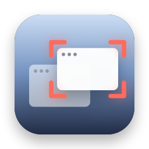
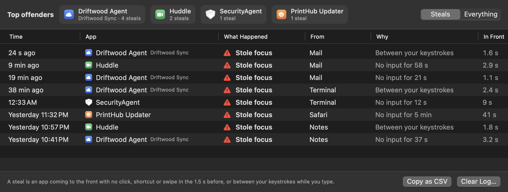

Who Stole My Focus
Halfway through a sentence, and the rest lands in another window? See exactly which app jumped in front.
Thanks for downloading! If it helps you catch something, a star on GitHub helps other people find it.
free · open source · macos 14+ · no permissions · no internet access
How it decides

- You switched: a click, a shortcut like ⌘Tab, a key pressed in Spotlight or another launcher, or a swipe to another Space, just before. Mission Control and Notification Center always count as you, even from a hot corner.
- You opened it: its first trip to the front after you opened it, however long it took to start.
- Came back: focus returned to the app you were using after a password prompt, the lock screen, or an app quitting.
- Stole focus: none of the above. No click or keypress just before, or you were typing before and after it came forward.
- Not sure: a keypress just before, then you stopped typing, or anything before your first click after login. Not counted.
Questions
Why does my Mac keep switching windows by itself?
Usually an app or background helper brings itself to the front: an updater, a sync client, a meeting app, a password or permission prompt. Who Stole My Focus logs every one, so the next time it happens you can see exactly which app it was.
How do I find out which app is stealing focus?
Install Who Stole My Focus and leave it running. When an app takes focus without you switching to it, the menu bar icon changes and its menu names the app, what it took focus from and when. Top Offenders shows which apps do it most.
What is SecurityAgent, and why does it take focus?
SecurityAgent is the part of macOS that asks for your password to approve a change, like an app installing a helper. Usually another app triggered it, and the log shows what was in front just before.
Will it blame me for switching apps?
No. Clicks, ⌘Tab and other shortcuts, launchers like Spotlight, Raycast and Alfred, swipes between Spaces and apps you just opened all count as yours. When it can't tell, it says so instead of calling it a steal.
Does it need any permissions?
None. It only knows how long ago you last clicked or typed, never which key or what you typed, and it never reads your windows. It runs in the macOS App Sandbox with no internet access, and the code is open source.